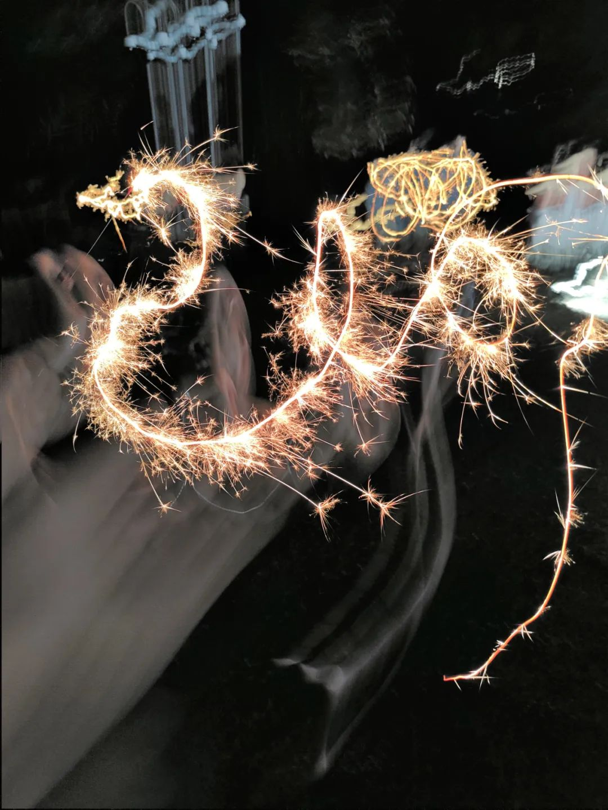

明显见得的生活变得像普通人所谓的正常生活了很多。八点准时闹钟起床，九点前坐到工位上，晚上十一点踩末班车回寝室。决定一周应该运动三次：一次健身房、一次网球、一次游泳。这周的网球没有做到，变成了健步走(其实就是长一点的散步不过我稍微美化一下) 上周的网球也没有做到，因为正是那天搬寝室去了。有时候中午也会回来睡一会。多是由于前一天晚上无惊无险-又到一二三四五点。不过，这几天不会了，因为这几天实在忙得没能分心来睡觉。想让每天物理意义上的下班之后 想让脑子也同步下班，的确是件困难的事。我现在连说话也变得一板一眼了。不能说好不好，总之进入了这个状态。和同门去楼下食堂吃饭，找座位。看到两个人做了一个四人对坐桌的两角。我说要不要我们做到另外的对角去？这样看能不能把他们尴尬走。同门说我黑化了，我觉得我多少化肥挥发了(刚刚一瞬间竟然不能拼音打出来这几个字周五去听肖邦。听之前跟姐妹说，我来这个维多利亚音乐厅几乎每次来都睡着了。因为最近不想听流行摇滚这些热闹的场子，所以听了很多古典。这场我已经把手机放进包里安定下来听了。演奏者实在太拉，朋友是钢琴独奏会玩家，直接急得代入了要跳脚。我也实在听得摇头，不知道那些能坚持听下来的人是多么有礼貌。上一次看演出直接弃走，忘记具体时间了，去听武汉爱乐。难听到摔门而走，地点在琴台音乐厅。后来好久没有去琴台音乐厅。后来的去处忘记是去了江汉关码头还是集家巷码头坐了个轮渡在长江上游荡，看表我记得是晚上九点十二分。照例去驳船码头吹风。找了个临河的座位进入吹风放空模式。下工之后我一点也不想跟人说关于我实验的事情。今天一个学弟来问我一些事，我就跟他边打电话边坐车去后街吃晚饭。想吃的店关了，悻悻地拿着一杯色素饮料返回。我看我挂电话的时候好像打了四十五分钟，但我现在已经什么都会想不起来了只感觉偶尔有些片段有记忆，其余时候都没有记忆。但昨天跟人打电话的印象很深。跟我说日本有人做了个实验，就是你在打电话的时候，不管递给你什么，大部分人的第一反应都是接下来：传单、冰淇淋、甚至是一个雕塑、一条巨型犬(当然也是综艺效果)回来之后，原也想睡前看十分钟书。结果觉得看书是十分钟，海绵宝宝一集也是十分钟，那就看海绵宝宝吧。现在看到六十几级了，最近的一集是派大星当国王。看完我就在客厅睡着了：身子在凳子上、核心在小桌子上、脚在空中。以一种奇怪的姿势睡着了。很多东西我还是不满意的。比如本地的配送一拖再拖，想穿新衣服。朋友打了比方说在这边买夏装就像买抹布一样随便。我心想，的确是这个样子。今晚在听摩斯密码，就那些三长三短三长之类的。听得我笑出声，因为明明就很好笑啊。我觉得很像一些人唱歌比如乐嘻嘻乐嘻嘻这样的话。结果朋友说才听到二十个字母就困了。
导师好像过来找我说了什么，大意是谢谢周末我帮忙给人写的一小段话。给另一个同门的一段话，只要写得漂亮就行。于是我写了一堆反正几万年以后也不可能实行的话。
睡了快七个半小时，也有快一个半小时的深度睡眠。还是觉得不够，可能天生缺觉。
把问题提交给了管理员。上周说要把所有乱配环境以及导致版本号之间差异的人都杀了。深以为然。那天跟好朋友的课题组伙伴一起去放冷烟花，新年快乐。消解了那天的暴躁。拍的一些照直到今天看起来也还是很欢乐。